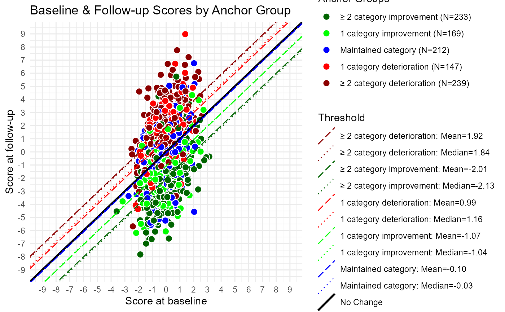

Vignette_Scatterplots.RmdWhen eCDFs/ePDFs are not feasible to compute, use a scatterplot. Scatterplots can serve as supplemental information even when eCDFs are computed.
Criteria: When odds ratios in the eCDF approach zero or infinity, it makes more sense to use the scatterplots. In practice, a rule of thumb could be n=5 required in each anchor group for the eCDF to be interpretable.
TODO: work on developing this criteria further.
sim.out <- COA34::sim_pro_dat(N=1e3,
polychor.value = 0.4,
corr = 'ar1',
cor.value = 0.8,
var.values = c(5))
dat <- sim.out$dat
# You already have the PGIS_bl and PGIS_delta in the generated data,
# you wouldn't have that in a real dataset, so drop that first
dat <- dat[, !(colnames(dat) %in% c('PGIS_bl', 'PGIS_delta'))]
# This makes the resf of this more realistic
dat <- COA34::compute_anchor_delta(dat = dat,
subject.id = 'USUBJID',
time.var = 'Time',
anchor = 'PGIS')
dat <- COA34::compute_change_score(dat = dat,
subject.id = 'USUBJID',
time.var = 'Time',
score = c('Y_comp', 'Y_mcar', 'Y_mar', 'Y_mnar'))
dat <- COA34::compute_anchor_group(dat = dat,
anchor.variable = 'PGIS_delta',
number.of.anchor.groups = 5)
thr <- COA34::compute_thresholds(dat = dat,
anchor.group = 'anchor.groups',
time.var = 'Time',
change.score = 'Y_comp_delta')This function is a little more obscure.
cap <- COA34::compute_prop_surp(dat = dat,
anchor.group = 'anchor.groups',
time.var = 'Time',
change.score = 'Y_comp_delta',
threshold.label = 'Improved_1',
mean.or.median = 'median')First, adjust the dataframe. The ggplot2 package is well-suited to long datasets, which is the way you should be structuring your data. However, in this case we have to adjust that.
dat.plot <- dat
t4 <- which(dat.plot[ , 'Time'] == 'Time_4')
dat4 <- dat[t4, c('USUBJID', 'Y_comp')]
colnames(dat4) <- c('USUBJID', 'Y_comp_4')
dat.plot <- merge(x = dat.plot, y = dat4, by = 'USUBJID', all = T)Next is to create the x and y limits on the plot. The limits should be symmetric. Note that real data would likely range from 0 to 100.
To be used for both dots and lines, and in legends.
unique(dat.plot$anchor.groups)
#> [1] Maintained Deteriorated_2+ Improved_2+ Improved_1
#> [5] Deteriorated_1
#> Levels: Improved_2+ Improved_1 Maintained Deteriorated_1 Deteriorated_2+
ag.cols <- c('Deteriorated_2+' = "darkred",
"Deteriorated_1" = "red",
'Maintained' = 'blue',
'Improved_1' = 'green',
'Improved_2+' = 'darkgreen')
ag.names <- c('Deteriorated_2+' = '\u2265 2 category deterioration',
"Deteriorated_1" = "1 category deterioration",
'Maintained' = 'Maintained category',
'Improved_1' = '1 category improvement',
'Improved_2+' = '\u2265 2 category improvement')#"\u2265" is ≥
stat.lty <- c("Mean" = "longdash", "Median" = "dotted")
ag.data <- merge(cbind(ag.cols),cbind(ag.names), by = 0)
colnames(ag.data) <- sub("Row.names", "Anchor Group", colnames(ag.data))
ag.data <- merge(thr, ag.data, by = "Anchor Group")
ag.data$ag.legend <- paste0(ag.data$ag.names, " (N=",ag.data$N,")")This will be merged into a dataframe that contains the threshold values. This dataframe will then be used in the plot.
# Line Plotting data:
line_data <- tidyr::pivot_longer(ag.data,cols = c("Mean", "Median"),names_to = "stat")
line_data$label <-
sprintf(paste0(line_data$ag.names,": ",line_data$stat, "=%.2f"),line_data$value)
#TODO: make label a factor to control order in legend
#line_data$label <- factor(line_data$label,
# levels = c("≥ 2 category improvement: Mean=-2.28",
# "≥ 2 category improvement: Median=-2.51"))
line_data$linetype <-
as.character(factor(line_data$stat,levels=names(stat.lty),labels=stat.lty))
line_data$slope <- 1
line_data$size <- .5#default line size=.5
#add reference line manually
refline <- data.frame("label" = "No Change", "stat" = "", "value" = 0,
"ag.cols" = "black", "linetype" = "solid","slope" = 1,"size"=1)
line_data <- merge(line_data, refline, all= T)Plot just one threshold line, the median of the “Improved one category” and the median of the “Deteriorated one category” anchor groups:
plot.groups <- c("Improved_1", "Deteriorated_1")#which anchor groups to include
plot.stats <- c("Median")#which stats to include (Mean and/or Median)
plot_line_data <- line_data[(line_data$'Anchor Group'%in%plot.groups&
line_data$stat%in%plot.stats ) |
line_data$label=="No Change",]All of the thresholds:
plot_line_data <- line_data # all of the lines
# Plot:
p1 <- ggplot(dat.plot, aes(x=Y_comp_bl, y=Y_comp_4, fill = anchor.groups)) +
theme_minimal() +
geom_point(shape = 21,size=3, color = "white") + #shape=21 allows a fill, color=white makes no outline
geom_abline( aes(slope = slope, intercept = value,
linetype = label, color=label, size = label),
data = plot_line_data) +#use data in plot_line_data to get lines
#Line settings: (note 'name' arg is the same for all)
scale_linetype_manual(
name = "Threshold",values = setNames(plot_line_data$linetype, plot_line_data$label)) +
scale_color_manual(
name = "Threshold",values= setNames(plot_line_data$ag.cols, plot_line_data$label))+
scale_size_manual(
name = "Threshold",values= setNames(plot_line_data$size, plot_line_data$label))+
#Point settings:
scale_fill_manual(
name = "Anchor Groups", values = ag.cols,
labels = setNames(ag.data$ag.legend, ag.data$`Anchor Group`))+
scale_x_continuous( breaks = use.range[1]:use.range[2], limits = use.range) +
scale_y_continuous( breaks = use.range[1]:use.range[2], limits = use.range) +
labs( title = 'Baseline & Follow-up Scores by Anchor Group',
x = 'Score at baseline',
y = 'Score at follow-up')
p1
#> Warning: Removed 4 rows containing missing values (geom_point).